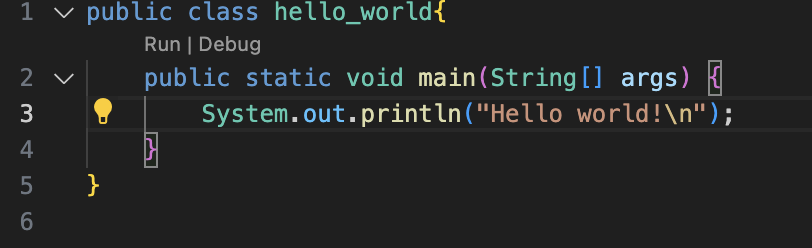
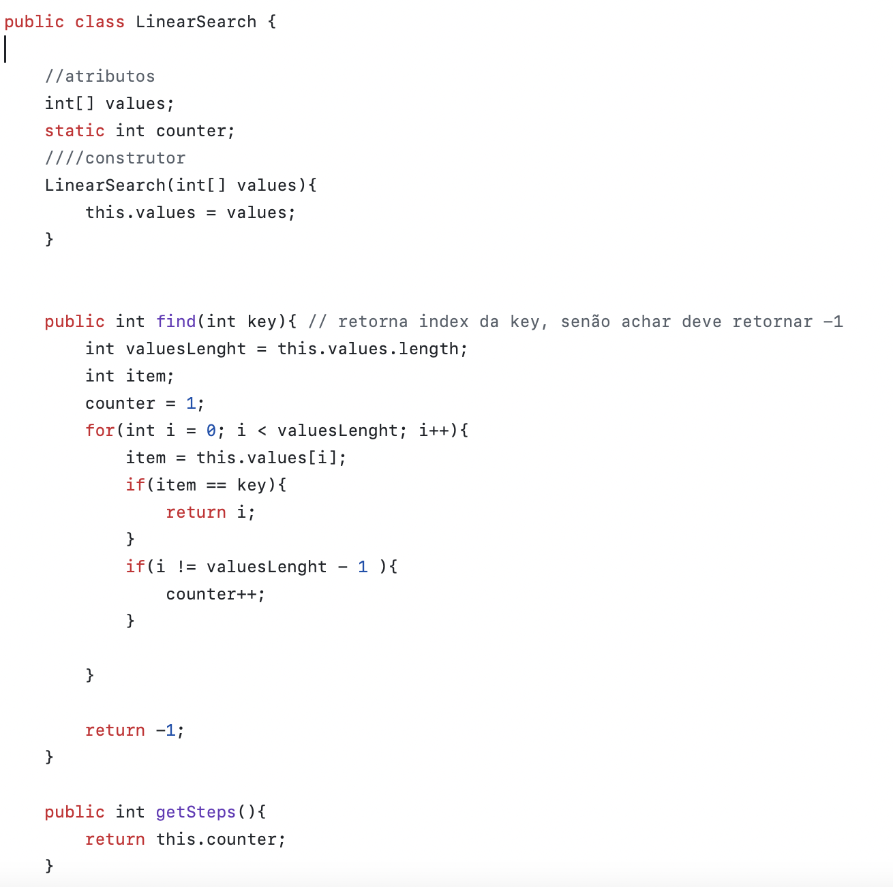
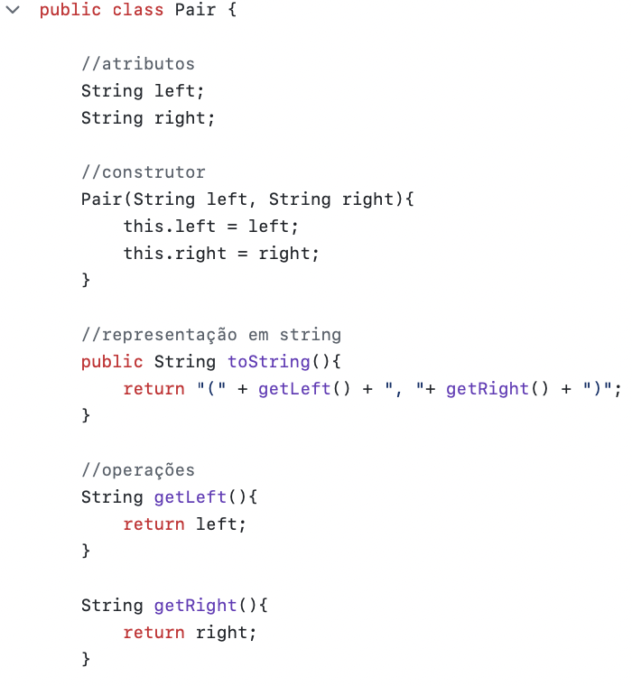
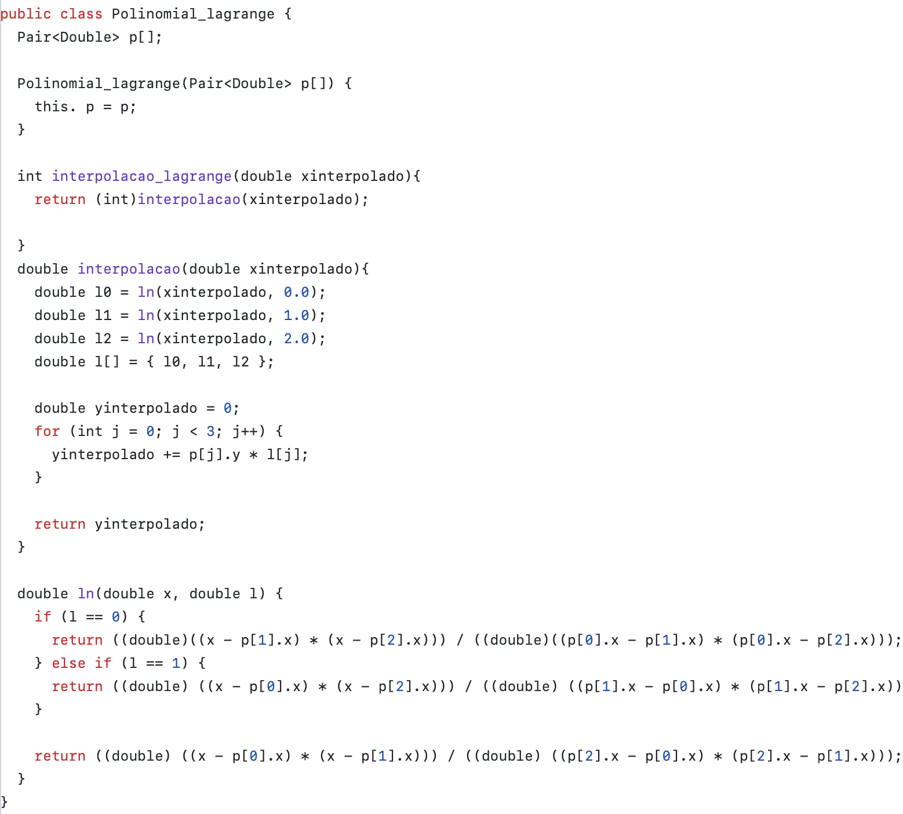
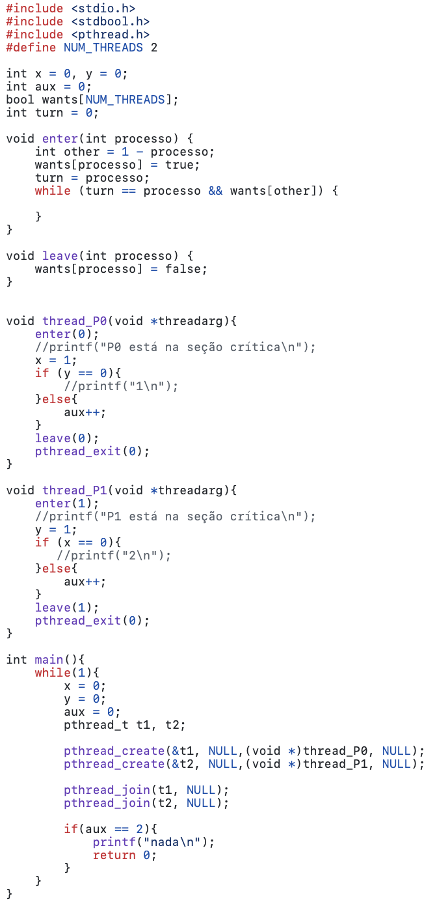
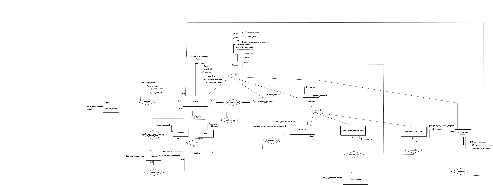
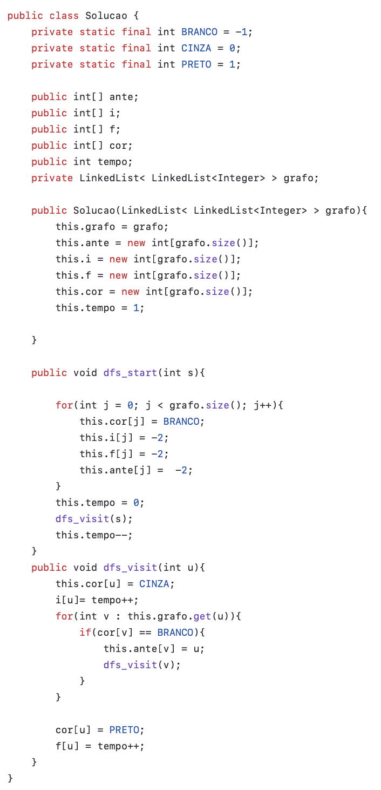

Neste parte da minha apresentação, gostaria de falar de algumas habilidades que venho adquirindo ao longo da minha Graduação em Ciência da Computação.
Separarei elas na seguinte divisão:
1° Período
No primeiro período do curso, foram trabalhadas as seguintes cadeiras : ELETRÔNICA BÁSICA, FILOSOFIA E CONHECIMENTO TECNOLÓGICO, INTROD A CIÊNCIA DA COMPUTAÇÃO, LÓGICA MATEMÁTICA, PORTUGUÊS INSTRUMENTAL II e PROGRAMAÇÃO I.
Neste período, foi trabalhado a linguagem de programação Java, que contribuiu para entendimentos iniciais de programação, como condicionais, e loops de repetição. E, este foi o meu primeiro código em java:
Nesse mesmo período, foram ensinados também conceitos de eletrônica básica, e tivemos manuseamento com Jumpers, fontes de energia, resistores, dentre outros elementos.
Em Introdução a Computação, como o nome sugere, tivemos noções iniciais do que teriamos durante o curso. Já em Português instrumental
foram estudados as tipologias textuais utilizadas no meio acadêmico, e concluimos a disciplina com a escrita de um paper.
Na disciplina de Filosofia e conhecimento tecnológico, estudamos alguns pensadores essenciais, e distrinchamos suas características. Enquanto
isso, em Lógica matemática, vimos expressões booleanas e tabela da verdade.
2° Período
No segundo período do curso, foram trabalhadas as seguintes cadeiras : ÁLGEBRA LINEAR I, CÁLCULO DIFERENCIAL E INTEGRAL I,CIRCUITOS DIGITAIS, HUMANIDADE E TRANSCENDÊNCIA, INTRODUÇÃO A ROBÓTICA e PROGRAMAÇÃO II.
Neste período, o conhecimento em programação foi ampliado com o estudo de Arrays, Matrizes, Strings, Algoritmos de Ordenação e busca, dentre outros. Este foi um exemplo de implementação de um algoritmo de busca, "Linear search":
Na disciplina de Álgebra Linear foi trabalhado as matrizes, enquanto em Cálculo, foi estudo Limites e Derivadas. Em circuitos digitais, ampliamos conhecimento em equacões booleanas, suas operacões, e circuitos dos mais diversos. Em humanidade e trasncedência, foi estudado a socidade e suas características ao longo do tempo, e em Introdução a robótica, houve contato com Arduino e sensores, além da linguagem C#.
3° Período
No terceiro período do curso, foram trabalhadas as seguintes cadeiras : ARQ E ORGAN DE COMPUTADORES I, CÁLCULO DIFERENCIAL E INTEGRAL II, ESTRUTURA DE DADOS I, HUMANISMO E CIDADANIA, LINGUAGENS FORMAIS e PROGRAMAÇÃO III.
Neste período, o conhecimento em programação foi acrescentado por meio do estudo de Programacão Orientada a Objetos. Um exemplo de código, feito por mim, utilizando conceitos desse assunto, está a seguir:
Na cadeira de Arquitetura e Organização de computadores, foram aprofundados os estudos no hardware do computador, como tipos de armazenamento, processamento, além da linguagem Mips. Já na em Cálculo II, foi estudado sobre integral e suas aplicabilidades. Em Estrutura de Dados I, foram estudadas estruturas como Pilhas, filas, Listas encadeadas, árvores, dentre outros. Em humanismo e cidadania, foram realizados vários estudos e dinâmicas, para entender um pouco mais sobre si e o próximo. Por fim, em linguagens formais, foi lecionado sobre autômotos e suas tipologias.
4° Período
No quarto período do curso, foram trabalhadas as seguintes cadeiras : ARQ E ORGAN DE COMPUTADORES II, COMPILADORES, COMPUTACÃO GRÁFICA, ESTATÍSTICA E PROBABILIDADE, ESTRUTURA DE DADOS II e MÉTODOS NÚMERICOS.
Neste período, expandimos nosso conhecimento na linguagem de costume (Java) para outros áreas. Cadeiras como Computação gráfica, Estrutura de dados II e Métodos numéricos, utilizaram ela. Para exemplificar, tem-se esse código, da disciplina de Métodos numéricos, de implementação da Interpolação polinomial de Lagrange:
Na disciplina de Arquitetura e Organização de computadores II, foram aprofundados os aprendizados da linguagem MIPS, e arquiteturas como monociclo, multiciclo e pipeline foram detalhadas. Já em compiladores, foi destrinchado cada etapa de um compilador, e sua funcionalidade, além de projetos com implementação que utilizaram a linguagem C. Na disciplina de Computação gráfica, utilizou-se a ferramento Processing para aprofundamento das possíveis representações gráficas de um computador. Em estatística e probabilidae, foi lecionado sobre as mais diversas métricas estatísticas, além de suas aplicações e uso em planilhas. Em estrutura de dados II, focou-se nas mais diversas variedades de árvores, como AVL e RED-BLACK. Por fim, em métodos numéricos, estudou-se sobre representações numéricas do computador, métodos de resolver equacões lineares, Integrais, interpolações, além da implementação dessas temáticas em linguagens como Python.
5° Período
No quinto período do curso, ao qual estou atualmente, estão sendo trabalhadas as seguintes cadeiras : BANCO DE DADOS I, ENGENHARIA DE SOFTWARE I, GRAFOS, PROGRAMACAO WEB E MOBILE, REDES DE COMPUTADORES I e SISTEMAS OPERACIONAIS I.
Neste período do curso, estão sendo trabalhadas novas linguagens, como HTML e CSS na disciplina de "programação web e mobile", que possui como objetivo geral instruir sobre Fundamentos do desenvolvimento de sistemas Web e Mobile. Inclusive, esse Portfólio é referente a esta cadeira. Já a cadeira de "Sistemas Operacionais", embora não esteja utilizando uma linguagem nova (C), está utilizando para uma área ainda não vista no curso, a de gerenciamento do sistema operacional. A seguir, um exemplo de código desse gerenciamento, pelo algoritmo de Peterson:
A disciplina de Banco de dados I tem falado sobre as representações de bancos de dados, que podem ser de nível mais alto ou baixo, e uma delas é o modelo entidade-relacionamento, ao qual foi realizado um projeto sobre um sistema de gerenciamento escolar, mostrado a seguir:
Na cadeira de Engenharia de Software, está sendo lecionado sobre metodologias ágeis e suas funcionalidades. Já em Grafos, foi introduzido alguns conceitos gerais, e algoritmos de busca, como a Busca por Profundidade mostrada a seguir:
Por fim, Na disciplina de "Redes de Computadores", estão sendo estudadas as mais diversas tipologias de redes, além de suas características, vantagens e desvantagens.